기억에 남는 사진들
 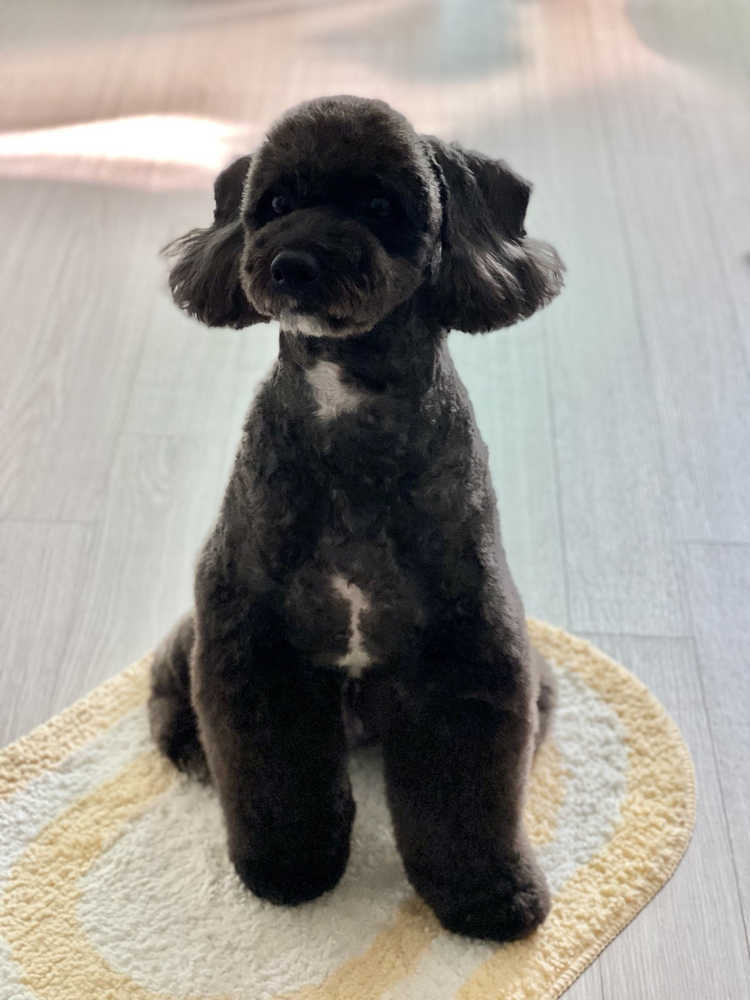
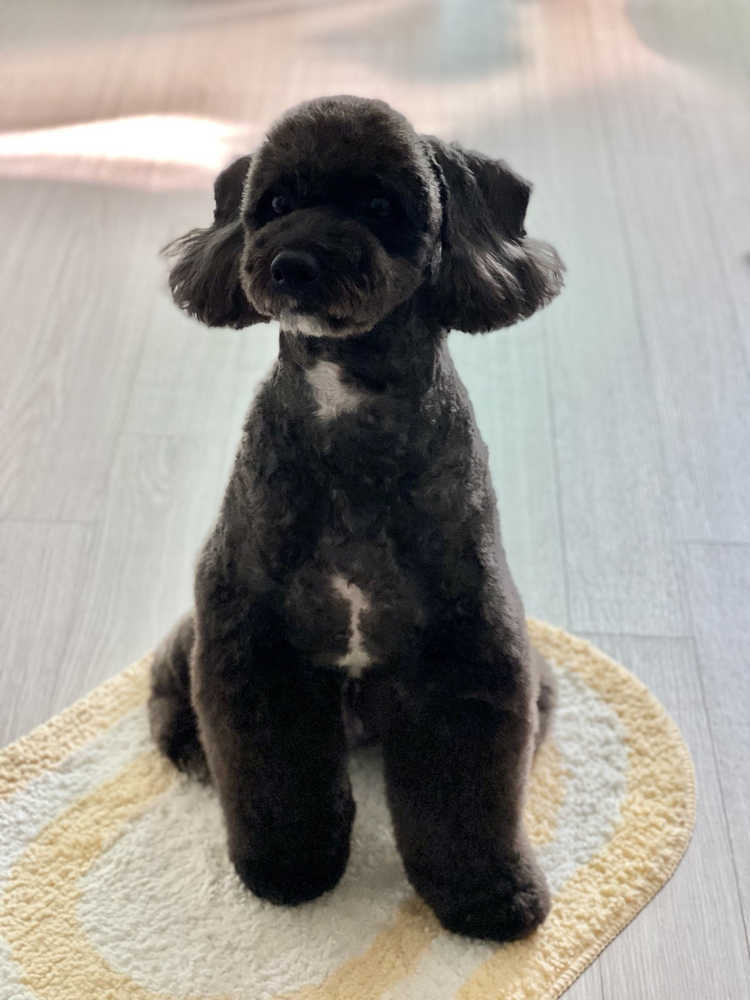
 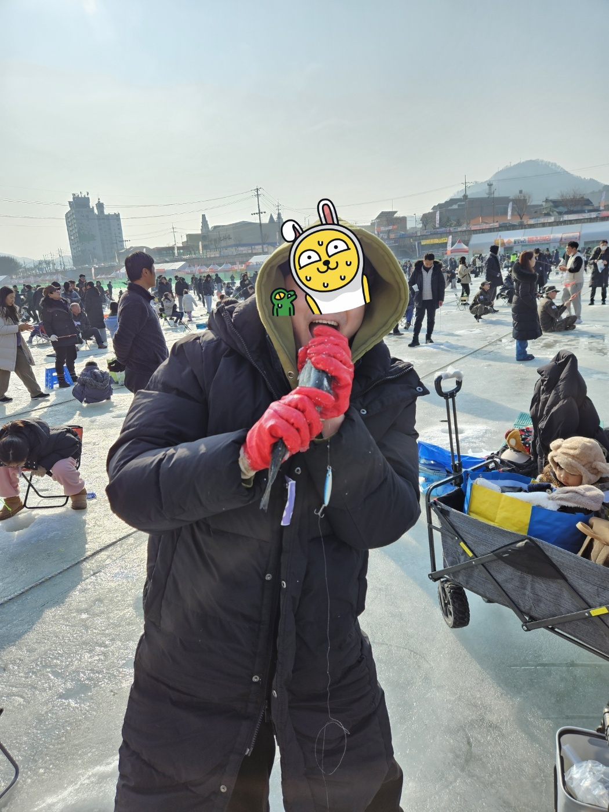
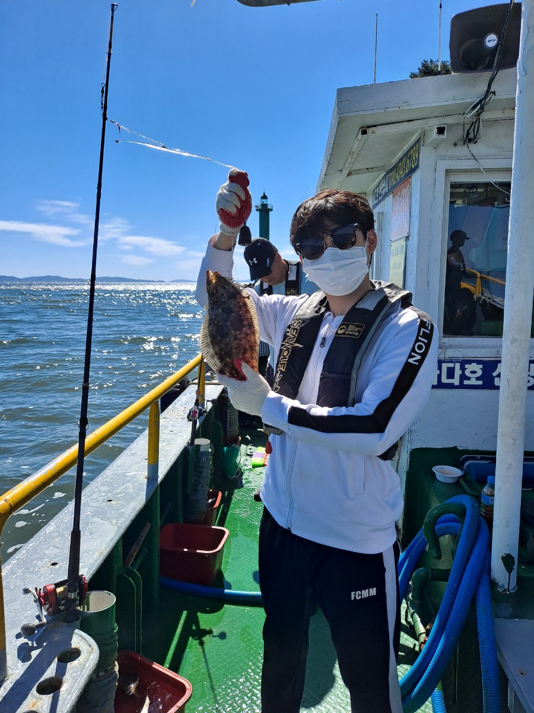
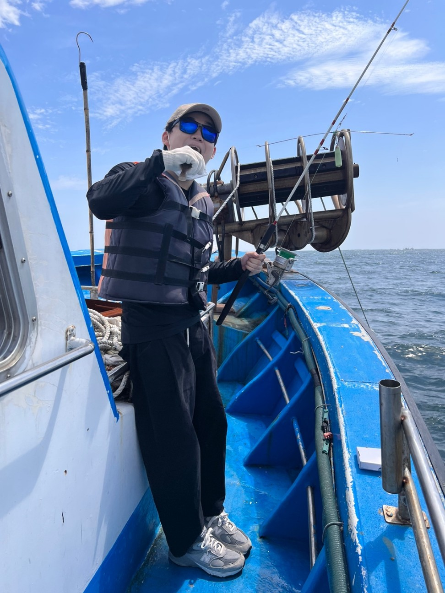
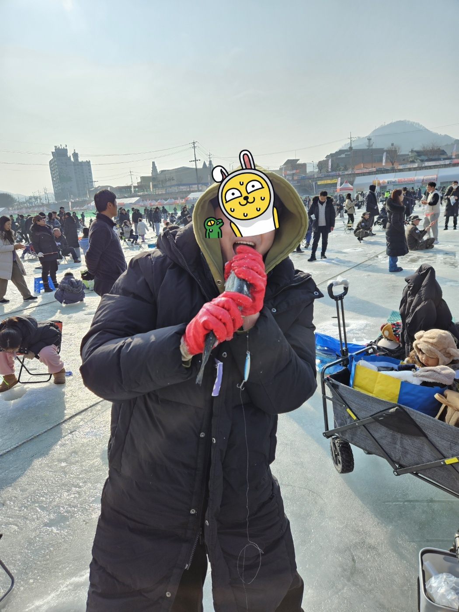
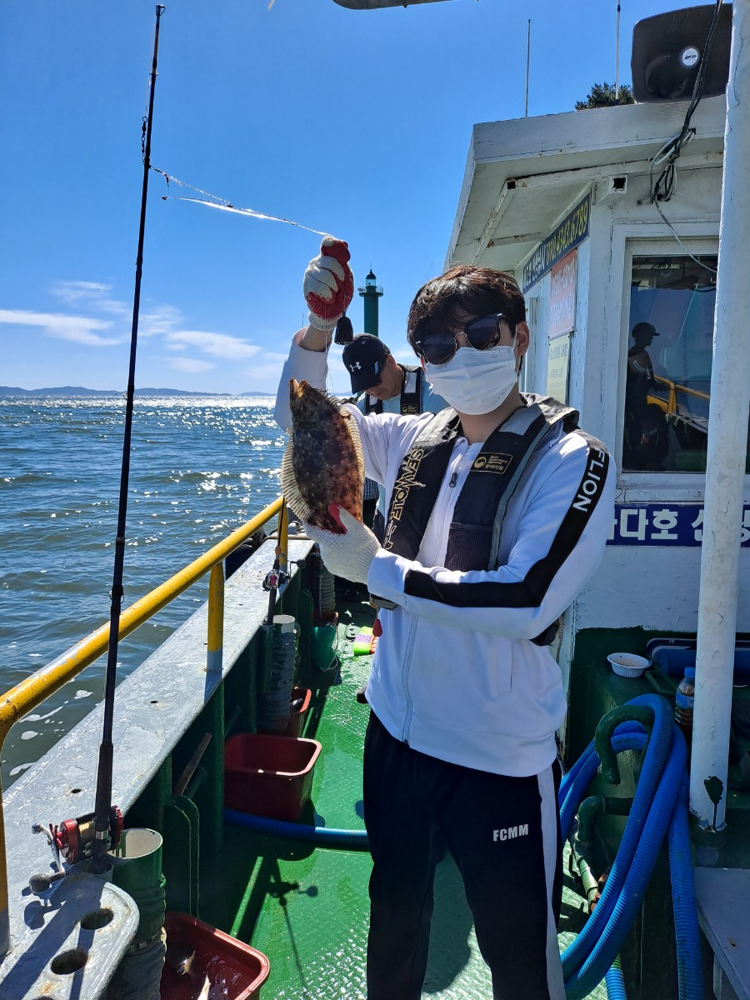
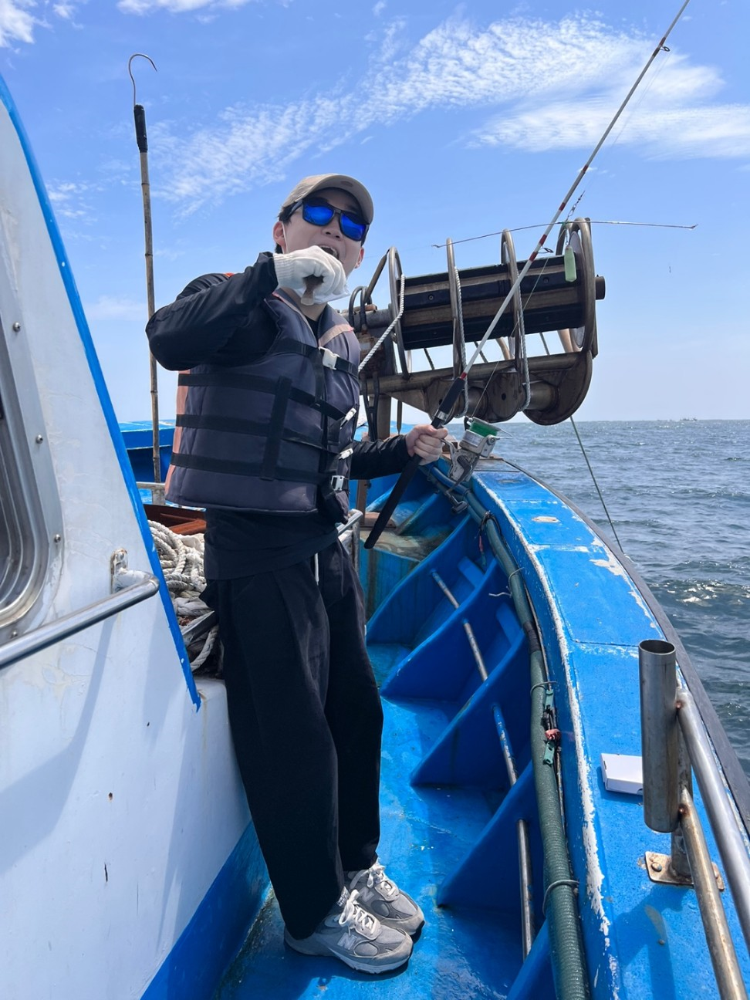
 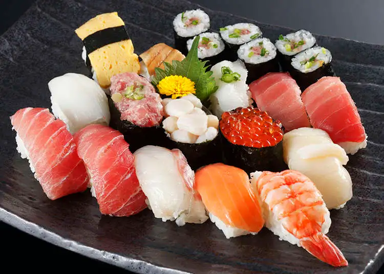
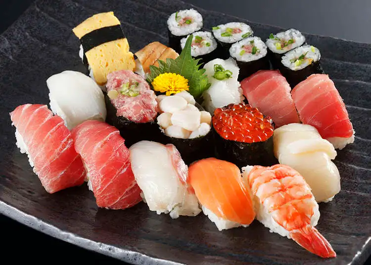

안녕하세요, 저는 협업을 통해 함께 성장해나가는 것을 즐기는 제리입니다. 원래 혼자하는 개발을 더 좋다고 생각하고 협업을 잘 안하고 만약 하더라도 잘 맞물리지 않는 경험을 하였습니다. 하지만, 대학에서 프로젝트를 진행하면서 협업이란 무엇인가에 대해 크게 깨달은 것이 많았고 우테코에서도 많은 사람들과 같이 협업을 하며 다양한 재미를 느끼고 싶습니다.
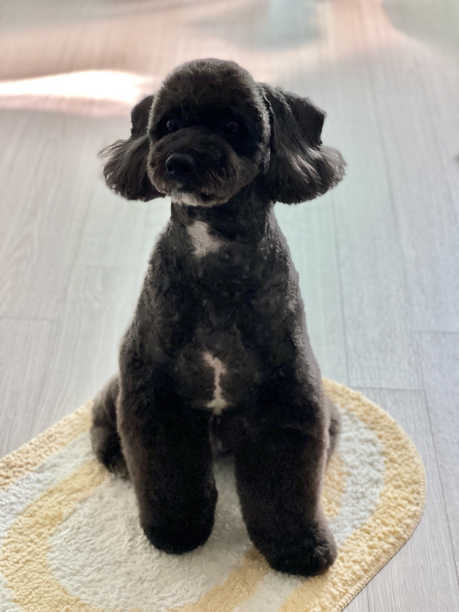
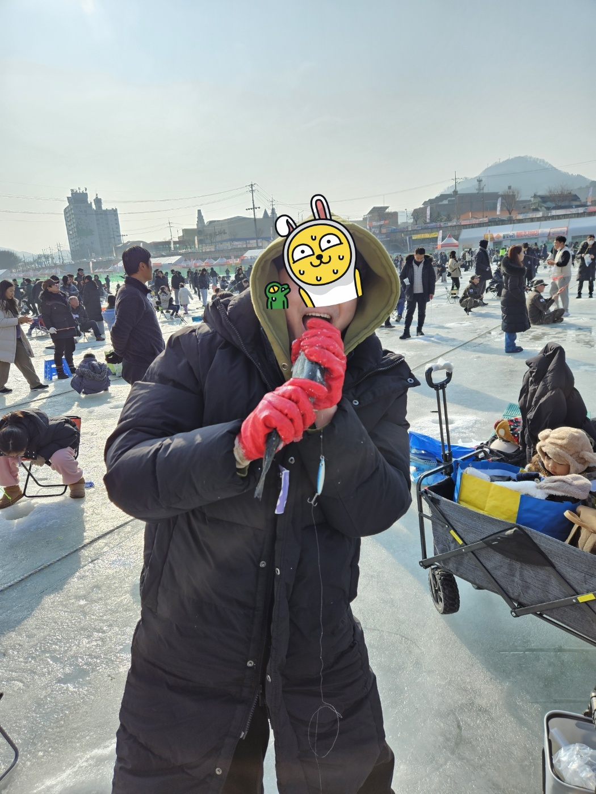
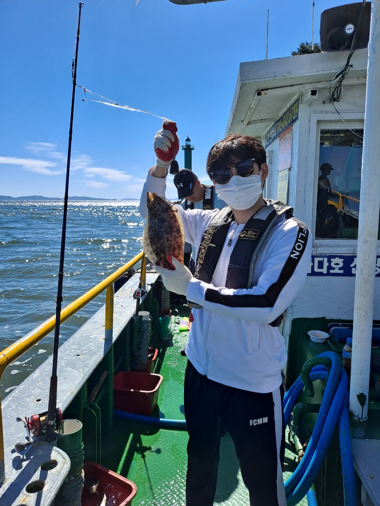
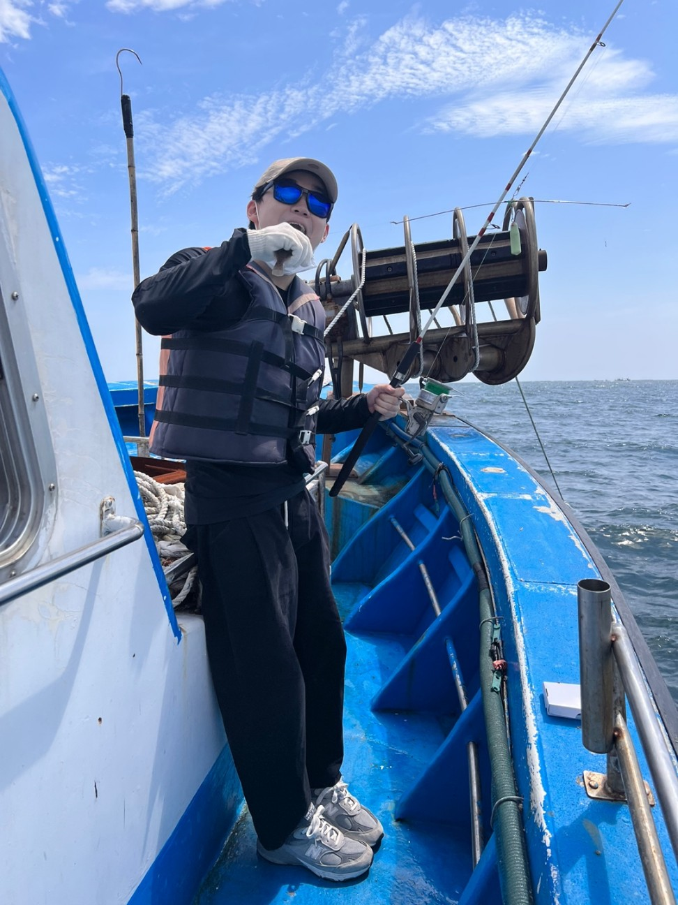
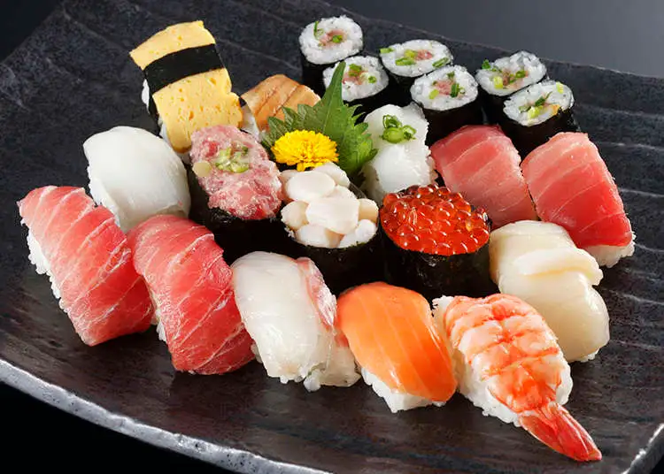

김윤석, 정려원 주연의 「김씨 표류기」는 현대 사회에서 소외된 개인이 극단적인 상황에서 스스로를 찾아가는 이야기를 그린 작품이다. 처음 이 작품을 볼 때는 단순히 정글의 법칙처럼 무인도에서 살아남기같은 내용과 그저 코믹한 설정과 감동적인 성장 서사가 돋보이는 영화라고만 느껴졌다. 그러나 다시 보면, 이 영화가 전하는 메시지는 단순한 표류의 이야기가 아니라 삶의 본질과 자기 발견을 다룬 작품이라고 할 수 있다. 만약 이 영화를 계속해서 본다면 처음에는 보이지 않던 의미들이 새롭게 보이며 마치 나 자신의 이야기처럼 다가오는 순간이 있을 것이다.

로이킴의 홈이란 노래는 노래 제목처럼 정신적 신체적으로 고통 받는 사회인들을 위한 안식처같은 노래이다. 제일 감명깊은 노래 가사는 "가슴이 시릴 때 아무도 없을 때 여기로 오면 돼"라는 가사이다. 이 가사로 많은 위로를 받았고 또 힘을 냈다. 또한, 이 노래에서 가장 또 마음을 울린 내용은 로이킴이 이 노래를 작사를 하였을 때 집에 있는 강아지가 주인을 위로해주는 내용으로 작사를 했다는 것이다.

이 작품은 노인과 바다입니다. 이책의 내용은은 단순히 물고기를 잡는 과정이 아니라, 인간이 삶에서 마주하는 고난과 그것을 견뎌내는 태도를 이야기하고 있음을 깨닫게 된다. 산티아고는 오랜 기다림 끝에 거대한 청새치를 낚지만, 결국 상어들에게 물고기를 빼앗긴다. 하지만 그는 패배하지 않았았다. 육신은 지쳤을지라도 그의 의지는 여전히 굳건하였다. 이러한 모습은 우리 삶에서도 목표를 향해 끊임없이 나아가지만, 예상치 못한 시련에 부딪히는 인간의 모습을 떠올리게 한다. 이 작품을 계속해서 읽다 보면, 처음에는 보이지 않던 의미들이 새롭게 다가온다.